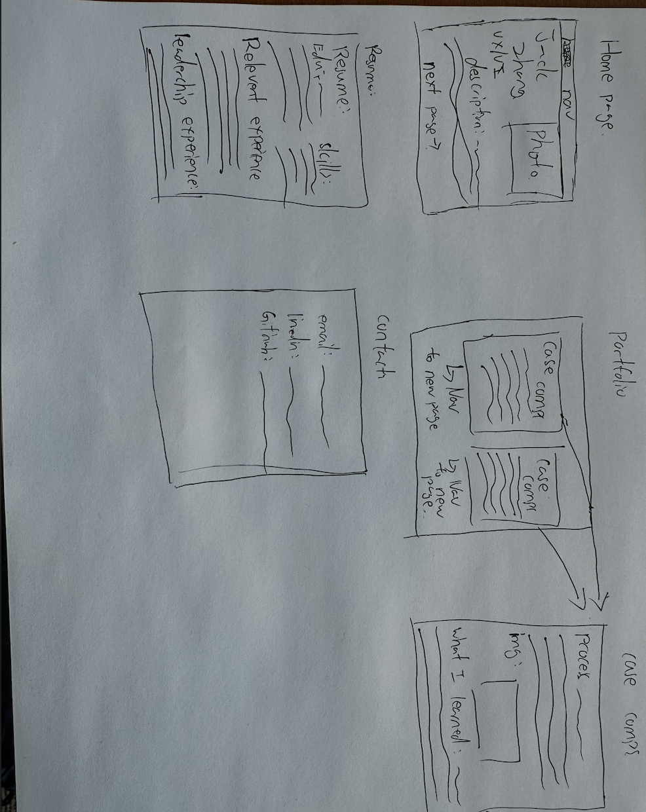

My Process
How I planned, designed, and built this website — including wireframes, accessibility decisions, and references.
This page documents the design and development process behind my portfolio website. It covers the planning phase (wireframes), accessibility compliance, and references for any external assets used. This transparency is part of good design practice.
01 — Planning & Wireframes
Before writing any code, I planned the site structure by sketching low-fidelity wireframes for each of the five pages. The goal was to decide on layout, navigation hierarchy, and content placement before worrying about visual design.
I decided early on to use a consistent fixed navigation bar across all pages so users always know where they are and can navigate freely. The hero section on the home page was designed to communicate who I am in under 5 seconds.

/>02 — Design Decisions
Typography: I chose the Outfit font from Google Fonts because it is modern, highly legible, and has a personality that feels professional without being stiff. It works well at both large headline sizes and small body text sizes.
Colour Palette: The primary colour is a deep navy blue (#1a3fa8 in light mode, #7aaeff in dark mode). I chose blue because it communicates trust and professionalism, which is appropriate for a portfolio targeting employers. All colour combinations were tested for WCAG AAA compliance.
Layout: I used CSS Grid for the portfolio gallery (a 3-column responsive grid that collapses to 2 columns on tablet and 1 column on mobile) and CSS Flexbox for the resume layout (date on the left, details on the right). No HTML tables were used for page layout.
Dark Mode: I implemented a dark mode toggle using JavaScript and CSS custom properties (variables). The user's preference is saved in localStorage so it persists across page visits.
03 — Accessibility (WCAG 2.0 Compliance)
Accessibility was a core requirement, not an afterthought. Below is a list of specific steps I took to ensure the site meets WCAG 2.0 guidelines.
04 — References (APA Format)
The following external resources were used in the development of this website.